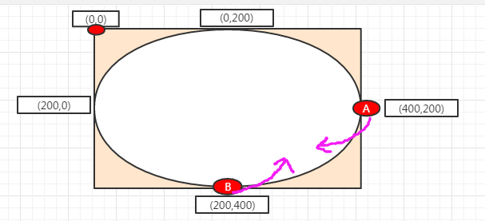

随机数正余弦案例:圆周运动
- 圆周运动原理：改变元素的top和left，根据随机数的三角函数的正余弦进行控制
- 正弦: Math.sin(angle) //angle是角度
- 余弦： Math.cos(angle)
第一步：理解正弦函数
//看这段js代码:
var angle = 0;
setInterval(function(){
angle += 0.5;
console.log(Math.sin(angle));
},1000);
//运行结果:
0.479425538604203
0.8414709848078965
0.9974949866040544
0.9092974268256817
0.5984721441039564
0.1411200080598672
-0.35078322768961984
-0.7568024953079282
-0.977530117665097
-0.9589242746631385
-0.7055403255703919
-0.27941549819892586
0.21511998808781552
0.6569865987187891
0.9379999767747389
0.9893582466233818
0.7984871126234903
0.4121184852417566
-0.0751511204618093
//以上数据说明:说明 Math.sin(angle)是周期性函数:0 1 0 -1 0 这样循环
第二步：理解余弦函数
//看这段js代码:
var angle = 0;
setInterval(function(){
angle += 0.5;
console.log(Math.cos(angle));
},1000);
//运行结果:
0.8775825618903728
0.5403023058681398
0.0707372016677029
-0.4161468365471424
-0.8011436155469337
-0.9899924966004454
-0.9364566872907963
-0.6536436208636119
-0.2107957994307797
0.28366218546322625
0.70866977429126
0.9601702866503661
0.9765876257280235
0.7539022543433046
0.34663531783502588
//以上数据说明:说明 Math.sin(angle)是周期性函数: 1 0 -1 0 1这样循环
第3步：推理圆周运动的起点，应该为：圆最右侧的端点或者最下方的端点
可以用（大盒子的一半的高度/宽度）+正余弦*（大盒子的一半的高度/宽度）
如图所示:A点或者B点:

第4步:书写HTML代码
//html代码:
<div id="box">
<div id="ball"></div>
<div id="ball2"></div>
</div>
第5步:书写js代码
window.onload = function(){
var ballDom = document.getElementById("ball");
var ballDom2 = document.getElementById("ball2");
var angle = 0;
var speed = changeAngle(3);//每走一次的弧度
var arr = [];
var arr2 = [];
function draw(){
angle= angle + speed;
var cleft = 150+Math.cos(angle)*150;//1 0 -1 0
var ctop = 150+Math.sin(angle)*150;// 0 1 0 -1
var cleft2 = 150+Math.sin(angle)*150;//1 0 -1 0
var ctop2 = 150+Math.cos(angle)*150;// 0 1 0 -1
ballDom.style.left = cleft+"px";
ballDom.style.top = ctop+"px";
ballDom.style.background = getRgb16();
ballDom2.style.left = cleft2+"px";
ballDom2.style.top = ctop2+"px";
ballDom2.style.background = getRgb16();
weiba(arr2,ballDom,30);
weiba(arr,ballDom2,30);
}
function weiba(arr,dom,num){
var ndiv = document.createElement("div");
ndiv.style.width ="4px";
ndiv.style.height = "4px";
ndiv.style.background=getRgb16();
ndiv.style.position = "absolute";
ndiv.style.left = dom.offsetLeft+"px";
ndiv.style.top = dom.offsetTop+"px";
document.getElementById("box").appendChild(ndiv);
arr.push(ndiv);
if(arr.length>num){
var divd = arr.shift();
document.getElementById("box").removeChild(divd);
}
}
setInterval(function(){
draw();
},30);
function changeAngle(jiaodu){
return jiaodu * Math.PI / 180;
}
function getRgb16(){
//0-255
var r = tRandom(256).toString(16);
var g = tRandom(256).toString(16);
var b = tRandom(256).toString(16);
if(r.length<2)r=r+""+r;
if(g.length<2)g=g+""+g;
if(b.length<2)b=b+""+b;
return "#"+r+""+g+""+b;
}
function rangeRandom(start,end){
return Math.floor(Math.random()*(end-start+1)+start);
}
function tRandom(start){
return Math.floor(Math.random()*start);
}
};